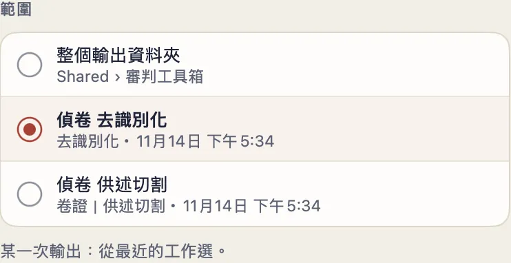
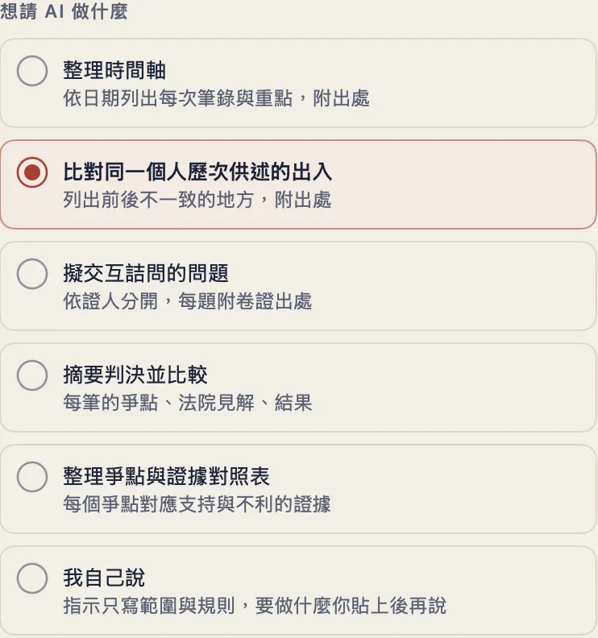
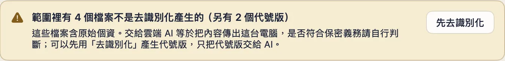
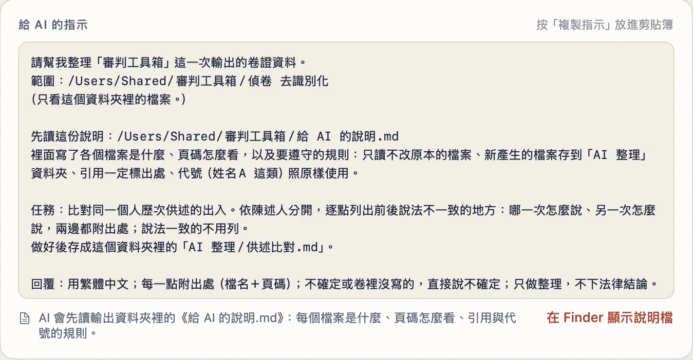

請 AI 工具整理輸出的卷證：交給 AI 教學（Mac）
用審判工具箱整理好的卷證（書籤、依陳述人分開的筆錄、Markdown 文字），可以再請 AI 工具做時間軸、比對供述這類整理。「交給 AI」不會呼叫任何 AI，它只做一件事：產生一段指示，告訴 AI 檔案在哪、先讀哪份說明、引用要標出處，放進剪貼簿。貼到哪裡、要不要貼，由你決定。
這個功能做什麼、不做什麼
「交給 AI」只有 Mac 版有，iPhone・iPad 版沒有。它做的事：
- 依你選的範圍和任務，產生一段給 AI 的指示，按「複製指示」放進剪貼簿。
- 在輸出資料夾寫一份《給 AI 的說明.md》，讓 AI 知道每個檔案是什麼、頁碼怎麼看、要遵守哪些規則。
- 檢查範圍裡有沒有含原始個資的檔案，有的話提醒你。
它不做的事：
- 不呼叫任何 AI，也不上傳任何東西。審判工具箱本身不連到任何 AI 服務，指示只放進剪貼簿。
- 不改任何 AI 工具的設定，也不替你貼上或送出。
把卷證內容交給雲端的 AI 工具，等於把內容傳出這台電腦。這是你自己的決定；是否符合律師的保密義務、委任人的同意範圍，請自行判斷。
建議的做法：去識別化 → 交給 AI → 還原
- 先用去識別化，把姓名、身分證字號等換成「姓名A」這類代號，輸出代號版的文字檔（替換方式選「代號」，並另存對照表）。
- 用「交給 AI」，範圍選那一次去識別化的輸出，複製指示貼到 AI 工具。
- AI 的回覆裡有代號時，回到「去識別化 › 還原」，選對照表、貼上回覆，換回原文。
去識別化用規則找個資，會有漏，代號版裡仍可能留著沒找到的個資。交出去之前請自己看過一次。
打開「交給 AI」
有四個入口，打開的是同一個畫面：
- 首頁四組工具下面的「交給 AI」卡片，按「交給 AI…」。
- 側邊欄「關於」上面的「交給 AI」。
- 選單列「檔案」最下面的「交給 AI…」。
- 每個工具輸出完成的畫面，右上角的「交給 AI…」。從這裡進來時，範圍會先選好剛剛那一次輸出，左上角的返回鍵回到那個工具。
選範圍
左邊的「範圍」決定 AI 要看哪些檔案。

- 整個輸出資料夾：審判工具箱的輸出位置（預設是「下載項目 › 審判工具箱」）。每一次輸出是裡面的一個子資料夾，AI 會看到全部。
- 某一次輸出：從最近的工作選，例如「偵卷 去識別化」。AI 只看那個子資料夾。最多列出最近 8 次；更早的輸出不在清單裡，要選整個輸出資料夾。
只想讓 AI 看代號版時，選那一次去識別化的輸出。
選要請 AI 做什麼

- 整理時間軸：依日期列出每次筆錄與重點，附出處。
- 比對同一個人歷次供述的出入：列出前後不一致的地方，附出處。
- 擬交互詰問的問題：依證人分開，每題附卷證出處。
- 摘要判決並比較：每筆的爭點、法院見解、結果。
- 整理爭點與證據對照表：每個爭點對應支持與不利的證據。
- 我自己說：指示只寫範圍與規則，要做什麼你貼上後再說。
前五個會在指示裡寫好要存的檔名，例如「AI 整理/供述比對.md」。
個資提醒
右邊最上面，App 會檢查範圍裡的檔案。檔名是「…_去識別化.md」或「…_去識別化.txt」的算代號版，其他檔案（PDF、切割總覽、對照表等）都算含原始個資。

- 黃色提醒只是提醒，不會擋住操作。
- 按「先去識別化」會打開去識別化。範圍是某一次輸出、而且 PDF 不超過 20 份時，那次的 PDF 會一起放進去。
- 這個檢查只看檔名，不看內容。代號版裡沒找到的個資，這裡也看不出來。
看過指示，複製
中間「給 AI 的指示」是會複製的全文，可以選取、捲動。內容依序是：範圍的完整路徑、先讀哪份說明、要遵守的規則、任務、做好後存到哪裡、回覆的方式。

規則包括：只讀不改原本的檔案、新產生的檔案存到「AI 整理」資料夾、引用一定標出處（檔名＋頁碼）、代號照原樣使用、不確定或卷裡沒寫的直接說不確定、只做整理不下法律結論。
按右上角的「複製指示」（鍵盤 ⇧⌘C），指示就放進剪貼簿，按鈕會暫時變成「已複製」。「在 Finder 顯示資料夾」打開範圍那個資料夾。
複製之前
按了以後
貼到 AI 工具
畫面下方「接下來」寫了三步。
- 能讀電腦上資料夾的 AI 工具（App 上舉的例子是 Claude 的 Code／Cowork、Codex）：直接貼上指示。第一次它可能會問能不能讀這個資料夾。指示裡寫的是完整路徑，它會照路徑去讀。
- 一般的聊天視窗：聊天視窗讀不到你電腦上的資料夾。先按「在 Finder 顯示資料夾」，把裡面的 Markdown 檔拖進對話，再貼上指示。
AI 的整理只是輔助。它可能漏看、讀錯或寫出卷裡沒有的內容；每一點都要對照原卷核對，引用前回到原頁確認。整理結果不是法律意見。
《給 AI 的說明.md》
指示會叫 AI 先讀輸出資料夾最上層的《給 AI 的說明.md》。這份說明由 App 寫入，內容是每個工具輸出的檔名規則、頁碼標記的意思、只有 PDF 時怎麼讀，以及上面那些規則。按「在 Finder 顯示說明檔」可以看到它。
- 說明檔被刪掉時，下次打開「交給 AI」會補回來。
- 你可以自己改內容，改過的 App 不會覆蓋。App 有新版的說明時，另存一份《給 AI 的說明.新版.md》。
- 說明裡要求 AI：在範圍裡看到對照表時不要讀它，也不要用它把代號換回原文。
把回覆裡的代號換回來
AI 的回覆裡有「姓名A」這類代號時，回到「去識別化」，切到「還原」分頁，選去識別化時存的對照表，貼上回覆，右邊就換回原文。步驟與畫面在去識別化教學的「還原」。
AI 把代號改寫成別的樣子（例如「A 先生」）就換不回來。指示裡已經寫了「代號照原樣使用」，回覆仍請自己看一次。
做不到的事／要注意
- 只有 Mac 版有這個功能。iPhone・iPad 版只在「Mac 版介紹」裡提到。
- App 不會替你把檔案傳給 AI，也不會檢查 AI 做得對不對。
- 個資提醒只依檔名判斷，不保證代號版裡沒有個資。
- 把內容交給雲端 AI 工具是否符合保密義務，請自行判斷。
- AI 整理的內容要對照原卷核對，不能當作法律意見。
要先把卷證轉成 AI 讀得到的文字，看PDF 轉 Markdown；個資換成代號，看去識別化。
常見問題
審判工具箱會把卷證傳給 AI 嗎？
不會。「交給 AI」只把一段指示放進剪貼簿，App 本身不呼叫任何 AI、不上傳。要不要貼、貼到哪裡，由你決定。
iPhone 或 iPad 上有「交給 AI」嗎？
沒有，只有 Mac 版有。
一般的 AI 聊天視窗也能用嗎？
可以，但聊天視窗讀不到電腦上的資料夾。先把輸出資料夾裡的 Markdown 檔拖進對話，再貼上指示。